Fomentando a transparência pública no Brasil
Reportagens e projetos
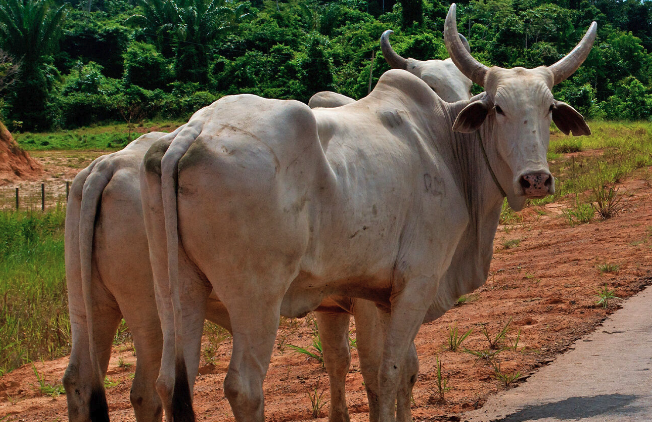
A dura e perigosa tarefa de apreender milhares de gados ilegais na Amazônia
Maioria das multas por fogo e desmatamento na Amazônia em 12 cidades
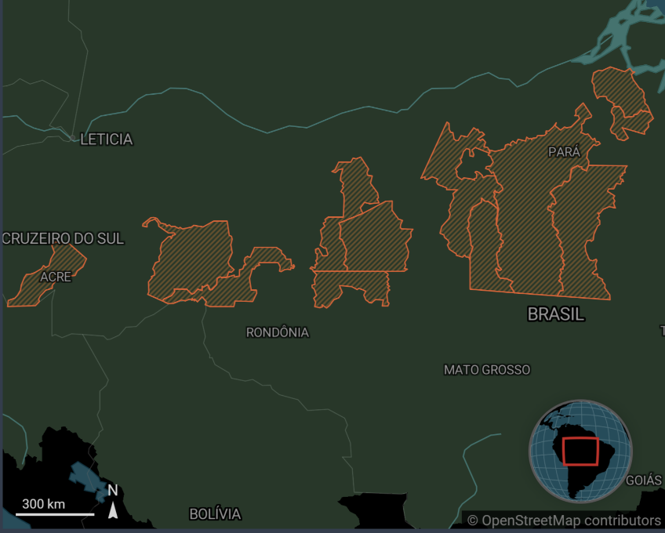
Essa concentração significativa de infrações ambientais em uma pequena fração da região destaca áreas críticas de preocupação na Amazônia. Os dados revelam padrões e focos de violações ambientais, oferecendo insights para investigação e ação política.
Grilagem no coração de Brasília
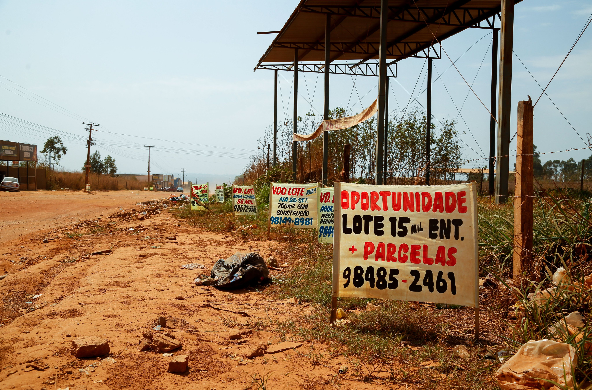
Investigamos como, com o apoio de políticos, indivíduos estão invadindo unidades de conservação do Brasil, desmatando e lucrando com a venda de lotes no Distrito Federal, perto do Congresso e do Palácio do Planalto.
Grilagem, Garimpo e Tráfico de Cocaína na Amazônia
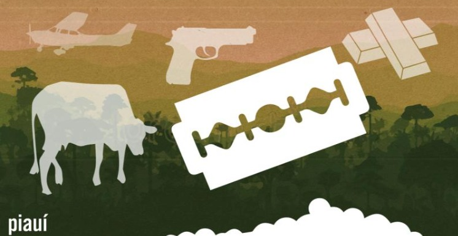
Esta investigação revela um esquema na região amazônica chamado "agropó" que combina grilagem de terras, mineração ilegal e tráfico internacional de cocaína. A investigação revela que proprietários de terras ricos, como Janio Oliveira, estiveram envolvidos nessa lucrativa rede criminosa.
Submundo Amazônico
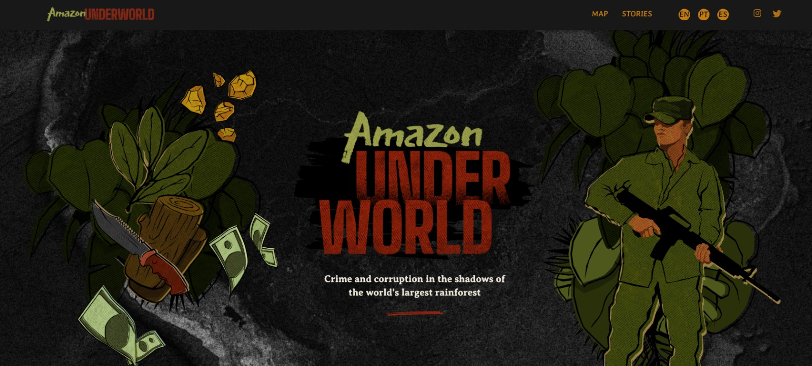
Uma série de artigos transfronteiriços de um ano que mapeou a presença de grupos do crime organizado na região amazônica e relatou em campo sobre os impactos de suas ações. O Data Fixers coordenou a análise de dados e obteve os documentos necessários para as reportagens.
Deforestation Inc.
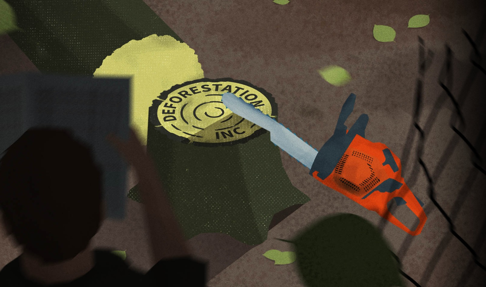
Uma investigação transfronteiriça liderada pelo Consórcio Internacional de Jornalistas Investigativos (ICIJ) expõe como uma indústria de sustentabilidade pouco regulamentada ignora a destruição florestal e violações de direitos humanos ao conceder certificações ambientais. O Data Fixers coordenou a análise de dados e obteve os documentos necessários para as reportagens brasileiras.
Como órgãos públicos dificultam o acesso a informações sobre a cadeia da carne
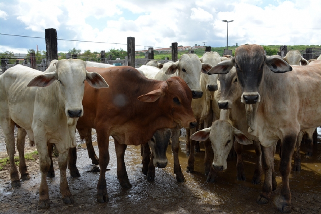
Em parceria com a ONG Global Witness, o Data Fixers investigou como órgãos governamentais usam várias estratégias para reter dados sobre a cadeia da carne no Brasil, dificultando a investigação de empresas.
O maior grileiro da Amazônia
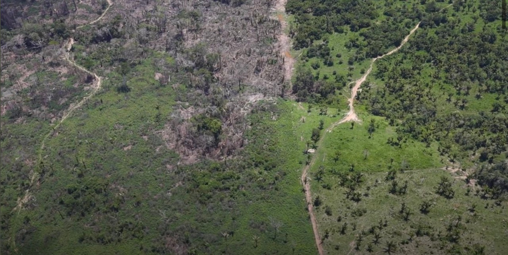
A revista Piauí publicou um perfil de Altino Masson, um homem que se apossou ilegalmente de 458.000 hectares de terras públicas, uma área equivalente a três vezes o tamanho da cidade de São Paulo. Esta reportagem é baseada em uma análise de dados conduzida pelo Data Fixers e o Center for Climate Crime Analysis (CCCA).
Um patrimônio mundial sob ataque no Brasil
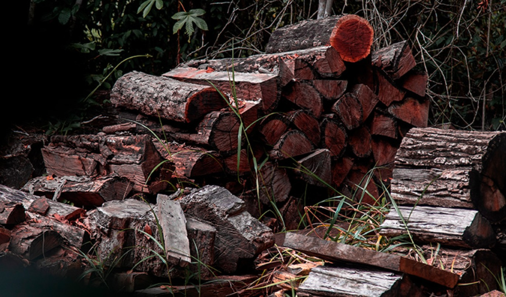
Esta reportagem foi apoiada pela Earth News Network/Internews. O Pau-Brasil está sendo levado à extinção por uma indústria pouco associada ao crime organizado: a música clássica. Conhecida por sua densidade e força, a madeira é trabalhada em arcos usados para tocar instrumentos de corda como violinos e violoncelos ao redor do mundo. Testes forenses em uma amostra da madeira confiscada, obtida por repórteres, mostram que foi extraída no Parque Nacional do Pau Brasil.
Fabricantes de Arcos Brasileiros Investigados por Tráfico de Madeira Ameaçada
Uma investigação transfronteiriça de dois meses nos EUA, Reino Unido e Brasil sobre um grupo de fabricantes de arcos suspeitos de traficar madeira brasileira ameaçada para fazer arcos de violino e violoncelo.
Como o Ibama perdeu R$ 1 bilhão em multas ambientais

Uma investigação sobre como multas ambientais desapareceram do Ibama, ajudando vários infratores a economizar dinheiro e continuar o desmatamento na Amazônia.
As artimanhas criminais de um austríaco
Realizamos raspagem de dados governamentais e judiciais para apoiar a investigação sobre lavagem de ouro.
Autorização de limpeza de pasto mascara e legaliza desmatamento ilegal
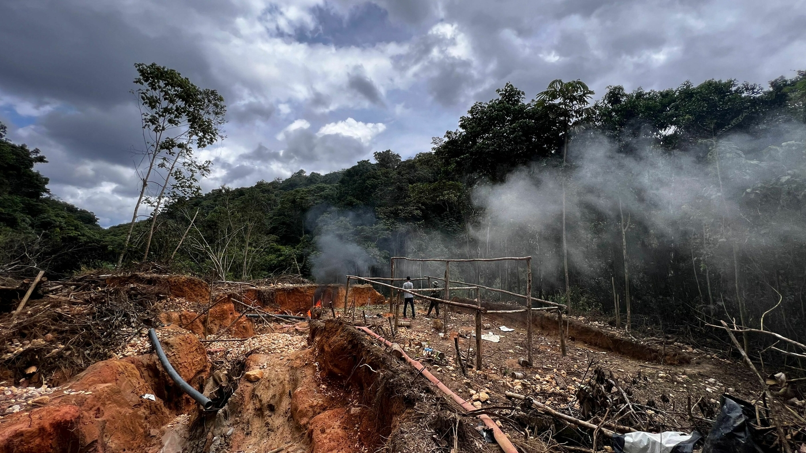
Elaboramos todos os pedidos de informação e organizamos os dados para apoiar a investigação sobre desmatamento ilegal autorizado por governos locais.
Autuados por trabalho escravo receberam mais de R$ 1 bilhão em isenções fiscais
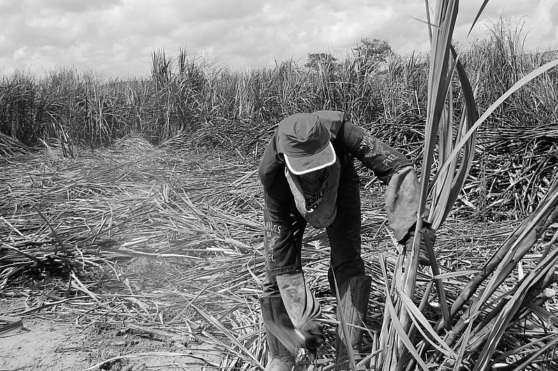
Analisamos dados que mostram isenções fiscais do governo brasileiro para empresas processadas por trabalho escravo.